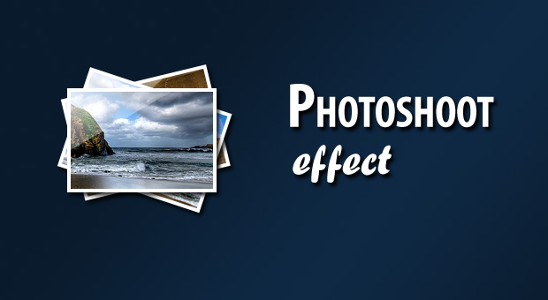

PHOTOSHOOT EFFECT

In this tutorial, we are creating a photo shoot effect with our just-released PhotoShoot jQuery plug-in. Within it you can covert a regular div on the page into a photo shooting stage simulating a camera-like feel.
Potential clients want to see who they'll be working with. Thay want to hire people,not stock photograph. We produced a custom photo shoot to bring the people of Paterson Buchanan front and center and to undersore the firm's open and welcoming style. Vivid images illustrate Paterson Buchanan's wide range of clients, as well as their commitment to the picturesque region the firm serves.